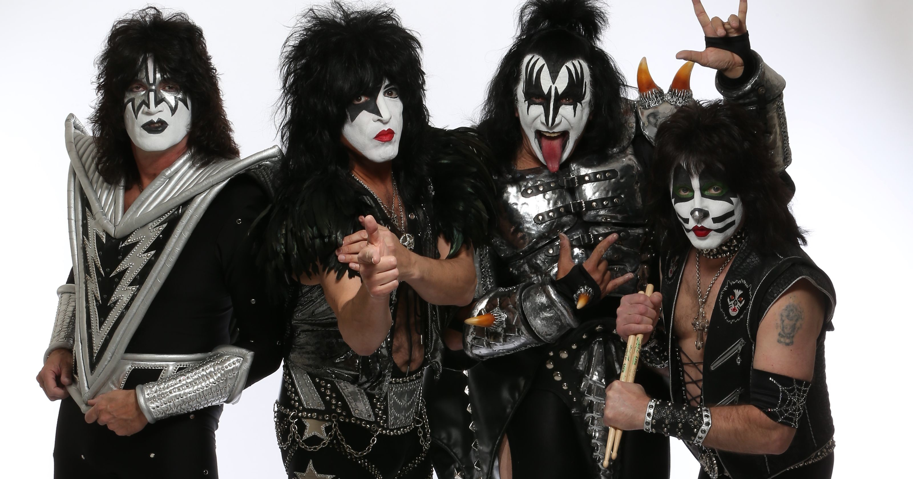

Kiss
Kiss es un cuarteto de rock estadounidense formado en Nueva York en 1972 por Peter Criss, Gene Simmons, Ace Frehley y Paul Stanley. Conocidos por su estilo único y enérgico, la banda es una de las más respetadas en la historia del rock duro.
Kiss adoptó una puesta en escena con zapatos de grandes plataformas, vestimenta glam y mucho maquillaje, lo que les permitió permanecer en el anonimato mientras se hacían populares. Su primer álbum homónimo se lanzó en 1974, y para 1975 ya habían logrado su primer gran éxito con *Rock ‘n’ Roll All Night*.
En 1976, la banda alcanzó nuevas alturas con el álbum *Destroyer* y su presentación en el Reino Unido. En 1977, Kiss lanzó un cómic basado en sus personajes maquillados, y el álbum *Love Gun* alcanzó el cuarto lugar en las listas estadounidenses.
En 1979, el tema *I Was Made for Lovin' You* les dio un reconocimiento internacional. Los discos *Dynasty* (1979) y *Unmasked* (1980) fueron grandes éxitos, pero después de este último, Peter Criss dejó la banda, siendo reemplazado por Eric Carr. En 1983, Vinnie Vincent reemplazó a Ace Frehley, quien abandonó para formar su propia banda.
A lo largo de su carrera, Kiss se ha mantenido como una de las bandas más influyentes y exitosas en el ámbito del rock, con una legión de seguidores y un legado perdurable en la cultura popular.
 Escuchar en Spotify
Escuchar en Spotify
 Escuchar en YouTube
Escuchar en YouTube